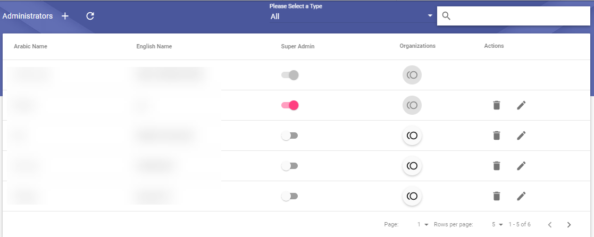

The system
administrator has been removed from the organizational structure and
replaced by the sub-system administrator and super-system administrator
on all departments through a new screen that is not linked to any
validity.
The system
administrator has been removed from the organizational structure and
replaced by the sub-system administrator and super-system administrator
on all departments through a new screen that is not linked to any
validity.
 Admin is the first system administrator on all departments and gives
authority to others to become system administrators over other
departments from the new screen, all users are listed as admins or
managers on all departments in the network even if they are duplicated
in a different departments.
Admin is the first system administrator on all departments and gives
authority to others to become system administrators over other
departments from the new screen, all users are listed as admins or
managers on all departments in the network even if they are duplicated
in a different departments.
 Administrators
screen from adminstration list will display only if user is super-system
administrator
Administrators
screen from adminstration list will display only if user is super-system
administrator
 Viewers
log screen from adminstration list will display only if user is
super-system administrator
Viewers
log screen from adminstration list will display only if user is
super-system administrator
 The
Add icon appears at the top of the screen and clicking it will display a
screen containing the following:
The
Add icon appears at the top of the screen and clicking it will display a
screen containing the following:
Toggle the choice between the system administrator and the system administrator on each department
Add button to add the user to a list with the manager type selected
After selecting the system administrator program on all departments, the add button will be active
If the option is selected in System Administrator, a dialog box to search for a user via the administrative unit appears
After selecting the user, a list of the departments to which he belongs will appear
The user can then be selected as managers of one department or several departments
Selecting
a user as a manager on all departments will remove and override all
departments designated as a manager
